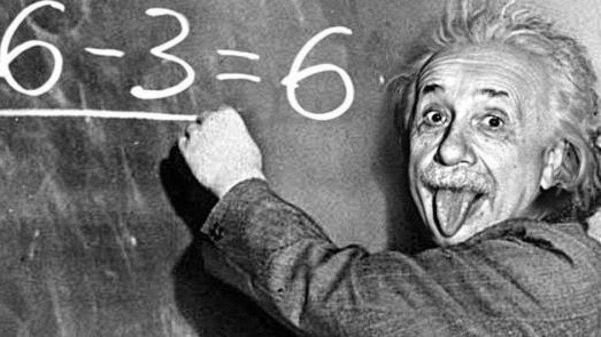

Teoria Relativității Restrânse
Cea de-a patra lucrare importantă publicată de Einstein în 1905, "Asupra electrodinamicii corpurilor în mișcare", conținea ceea ce avea să fie cunoscută mai târziu ca Teoria relativității restrânse, una dintre cele mai celebre contribuții ale sale, în care demonstrează că teoretic nu este posibil să se decidă dacă două evenimente care se petrec în locuri diferite, au loc în același moment sau nu. Ideile de bază au fost formulate de Einstein încă de când avea 16 ani (deci cu 10 ani în urmă).
Încă de la Newton, filozofii naturali (denumirea sub care erau cunoscuți fizicienii și chimiștii) încercaseră să înțeleagă natura materiei și a radiației, precum și felul în care interacționau într-o imagine unificata a lumii. Ideea că legile mecanicii sunt fundamentale era cunoscută drept concepția mecanicistă asupra lumii, în timp ce ideea că legile electricității sunt fundamentale era cunoscută drept concepția electromagnetică asupra lumii. Totuși, niciuna dintre idei nu era capabilă să ofere o explicație coerentă asupra felului cum radiația (de exemplu lumina) și materia interactionează atunci când sunt văzute din sisteme de referință inerțiale diferite, adică interacțiile sunt urmărite simultan de un observator în repaus și un observator care se mișcă cu o viteză constantă.
În primăvara anului 1905, după ce a reflectat la aceste probleme timp de 10 ani, Einstein și-a dat seama ca esența problemei constă nu într-o teorie a materiei, ci într-o teorie a măsurării. Esența acestei teorii speciale a relativității era constatarea că toate măsurătorile timpului și spațiului depind de judecăți asupra simultaneității a două evenimente diferite. Aceasta l-a condus la dezvoltarea unei teorii bazate pe două postulate:
Principiul relativității, care afirmă că legile fizicii sunt aceleași în toate sistemele de referință inerțiale
Principiul invariabilității vitezei luminii, care arată că viteza luminii în vid este o constantă universală.
Numai viteza luminii este constantă în orice sistem de referință, lucru preconizat și de teoria lui Maxwell. Tot aici apare pentru prima data celebra sa formulă:
E = mc2 ("Echivalența masă-energie")
Această ecuație exprimă cantitate imensă de energie ascunsă într-un corp și care poate fi eliberată atât în procesul de fisiune cât și în cel de fuziune nucleară, procese care stau la baza funcționării bombei atomice.
Iată câteva din consecințele relativității restrânse:
"Contracția Lorentz" sau "contracția lungimilor" însoțită de "dilatarea timpului": Micșorarea aparentă a dimensiunilor obiectelor care se deplasează față de observator cu viteze relativiste.
"Efectul Doppler": În astronomie, constă în micșorarea frecvenței ("deplasarea spre roșu") radiației emise de corpurile cerești îndepărtate ca urmare a expansiunii Universului.
"Aberația luminii": Imaginea unui obiect în mișcare (cu viteză apropiată de cea a luminii) apare comprimată asemeni unui con cu vârful indicând sensul deplasării
Masa nu mai este constantă și nici timpul nu se mai scurge cu aceeași viteză, mai ales la viteze foarte mari.
Teoria relativității restrânse aduce o explicație clară celebrului experiment Michelson-Morley (1887) putând fi considerat chiar o generalizare a rezultatelor acestuia.
Einstein a fost primul care a unit mecanica clasică cu electrodinamica lui Maxwell. Elaborând teoria relativității restrânse, Einstein a spart tiparele unor concepții geniale, clădite cu peste două secole în urmă, de către Isaac Newton în a sa Philosophiae naturalis principia mathematica (1686), dovedind o intuiție și un curaj exemplar. Prin aceasta a fost capabil să ofere o descriere consistentă și corectă a evenimentelor fizice din diverse sisteme de referință inerțiale fără a face presupuneri speciale cu privire la natura materiei sau a radiației, sau a felului cum ele interacționează.